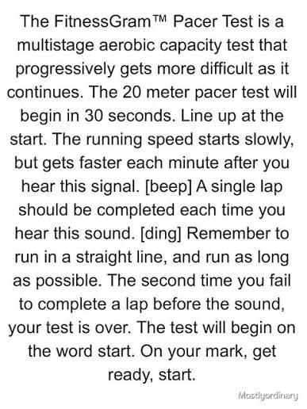

RESOURCES The PACER Test Empowering Students to Succeed! The PACER Test (Progressive Aerobic Cardiovascular Endurance Run) is an iconic fun, inclusive fitness challenge designed to measure aerobic capacity in students of all fitness levels

"the starting paragraph " by Roger Francisco, via PHDNS Latah County Public Health Directory & ServicesDeveloped by the Kenneth H. Cooper Institute, and as a part of the FitnessGram program, it’s not about competition—it’s about personal growth and promoting lifelong health.
The PACER Test is a multi-stage fitness test where participants run back and forth across a 20-meter space at a progressively faster pace, guided by audio cues.
and a quote
Please rise for our national anthemhttps://www.cooperinstitute.org/
i picked this because
About me